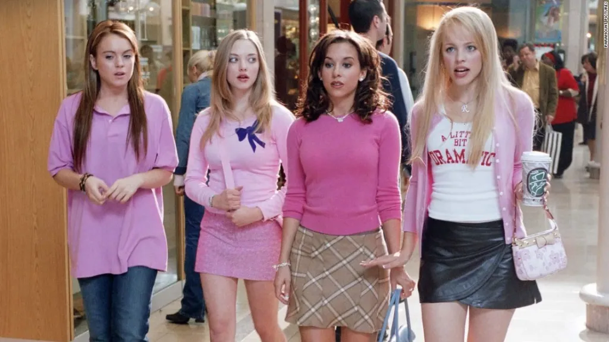
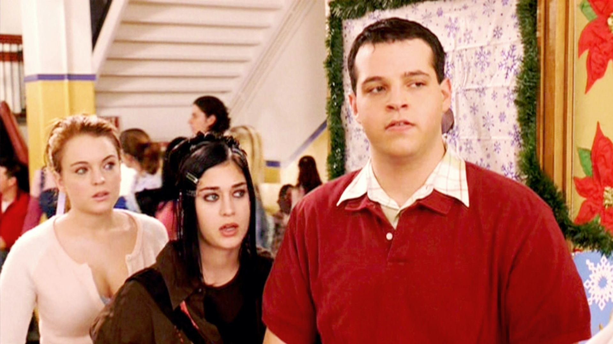
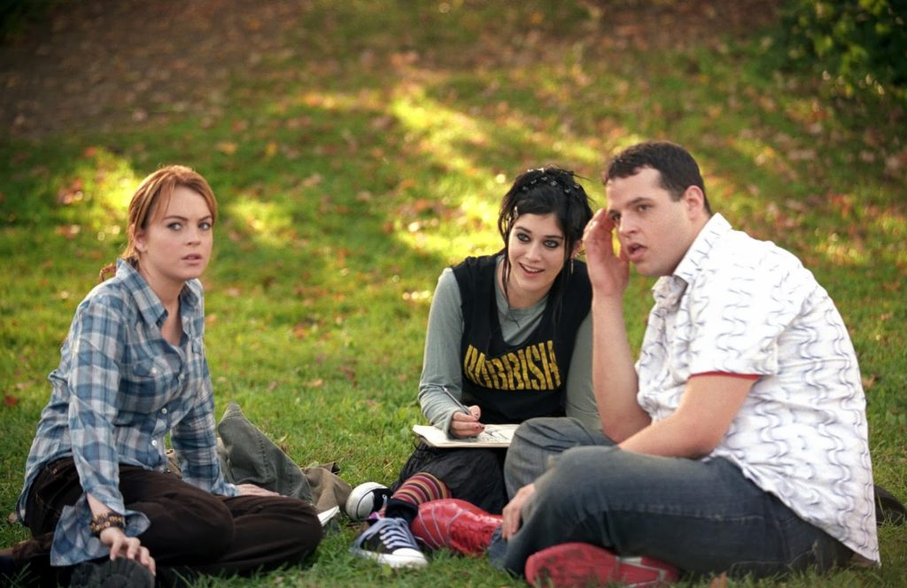

Cady é novata no colégio e é escolhida para sentar com as garotas malvadas

Cady sentou com elas e descobriu o livro do arraso que fala mal de outras garotas

Cady decidiu ser amiga de outras pessoas e descobriu o livro do arraso que fala mal de sua nova amiga
Cady se junta para escrever sobre outras garotas e começa a fazer parte das meninas malvadas

Cady não gosta da ideia e decide espalhar o livro do arraso para para outras garotas

Cady conta pra amiga e elas decidem se vingar

Cady decide não contar e destruir o livro sozinha